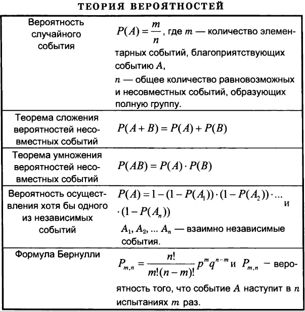

Для успешного решения задач такого типа необходимо базовое знание теории вероятностей.
1. На тарелке 16 пирожков: 7 с рыбой, 5 с вареньем и 4 с вишней. Юля наугад выбирает один пирожок. Найдите вероятность того, что он окажется с вишней.
2. УФабрика выпускает сумки. В среднем 8 сумок из 100 имеют скрытые дефекты. Найдите вероятность того, что купленная сумка окажется без дефектов.
3. Вероятность того, что батарейка бракованная, равна 0,06. Покупатель в магазине выбирает случайную упаковку, в которой две таких батарейки. Найдите вероятность того, что обе батарейки окажутся исправными.
4. В торговом центре два одинаковых автомата продают кофе. Обслуживание автоматов происходит по вечерам после закрытия центра. Известно, что вероятность события «К вечеру в первом автомате закончится кофе» равна 0,25. Такая же вероятность события «К вечеру во втором автомате закончится кофе». Вероятность того, что кофе к вечеру закончится в обоих автоматах, равна 0,15. Найдите вероятность того, что к вечеру дня кофе останется в обоих автоматах.